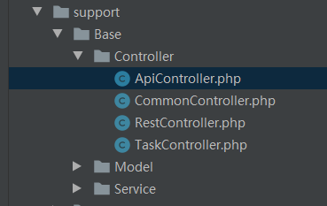

类的自动加载
1、类的自动加载介绍 PHP类的自动加载，一般可以使用__autoload()魔术函数来自定义。如果要指定回调函数来实现，可以用spl_autoload_register()指定。 composer可以实现一些开源组件的自动加载。 本框架可以使用composer安装和加载，如果不用它，框架会使用自己的自动加载机制。 注：框架的自动加载机制遵循PRS-4命名规范。 （1）类的文件名要与类名要一致。 （2）除根命名空间外，类的目录路径和命名空间大小写要一致。 2、自动加载哪个目录？ 类的自动加载都是通过命名空间来指定路径的。 框架自身目录的system/data/config.php文件定义了NAMESPACE_MAP自动加载配置。 （1）app开头的命名空间定义了application目录下的类（目录名和命名空间名必须小写） 参看如下框架的配置源代码：/* * 自动加载映射 */ 'NAMESPACE_MAP' => array( /*Ocara框架*/ 'Ocara\\' => OC_SYS . 'library/', 'Ocara\Functions\\' => OC_SYS . 'functions/', /*Ocara框架扩展插件*/ 'Ocara\Extension\\' => OC_EXT . 'library/', 'Ocara\Extension\Functions\\' => OC_EXT . 'functions/', /*应用自动加载映射*/ 'app\\' => OC_ROOT . 'application/', ),（2）不是以app开头的命名空间定义了support目录下的类（目录名和命名空间名必须大写）  （3）第三方程序或者自定义的加载机制 一些第三方程序或者我们自己都可通过spl_autoload_register()来指定自己的加载机制。符合这些规则的类受其定义，不会从support目录加载。 3、第三方程序是否与框架的自动加载类函数冲突？ 本框架的自动加载，一般不会与其他第三方程序的自动加载冲突。因为框架如果检测类不存在，会自动遍历所有其他注册的类自动加载函数。